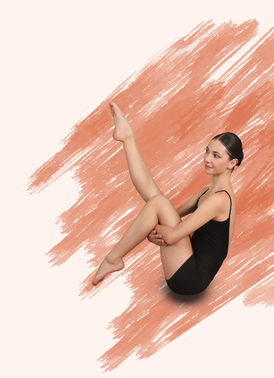
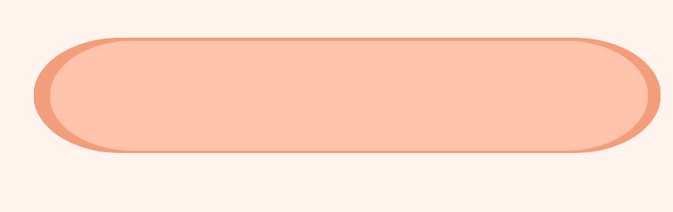
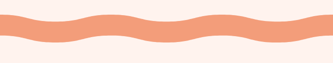

A Trajetória de uma Paixão
A sapatilha de ponta e o palco não são apenas símbolos de uma arte clássica eles representam uma
escolha de vida onde a disciplina, a persistência e a sensibilidade caminham juntas. Este projeto nasce de
uma vivência que começou cedo, aos quatro anos de idade, e que transformou a dança em uma válvula de
escape e na forma mais pura de expressão pessoal.
Desenvolver o Legado em Pontas é a maneira de unir esse aprendizado artístico à tecnologia, criando um
espaço onde a rotina de quem pratica o ballet possa ser organizada e valorizada. A escolha deste tema
reflete o desejo de retribuir à dança tudo o que ela ensinou ao longo de toda uma vida, garantindo que o
esforço diário de cada bailarino se transforme em dados, metas e reconhecimento cultural.
Entender o presente e planejar o futuro da nossa dança exige, antes de tudo, conhecer as raízes que
sustentam cada movimento.
